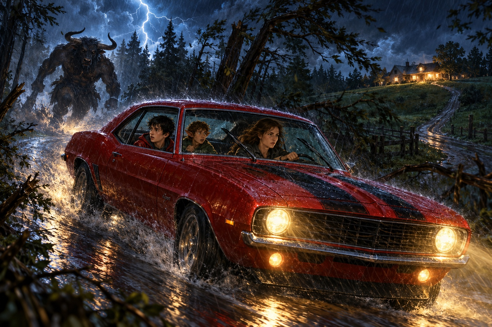
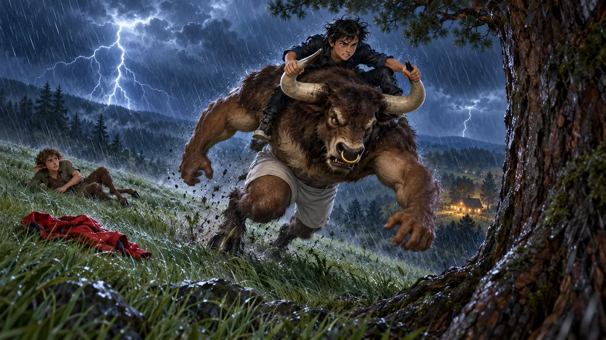
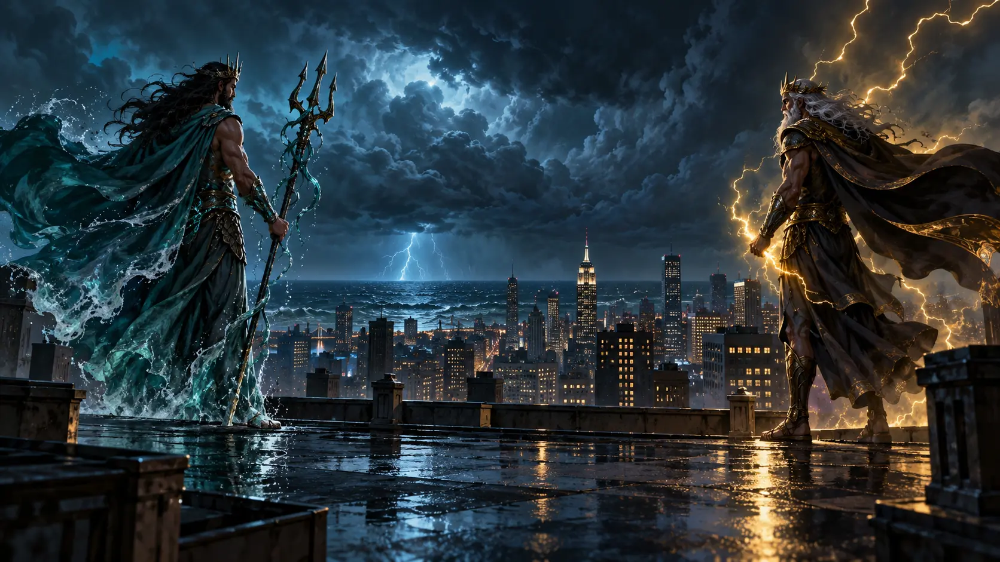

Your browser cannot save progress. Keep this tab open and download your writing before leaving.
Escape to Half-Blood Hill
Reality has cracked. A teacher vanished, three women cut a thread, Grover has hooves—and now the book and the film are telling two different versions of Percy’s story.
34 clue points + 6 writing points. Each question is scored once. Wrong answers reveal the explanation and still let you continue.
What happened first?
Click the four events in chronological order.

Ordinary… or mythological?
Decide what each clue really means in Percy’s world.

Choose the exact expression
Use the language from Chapter 4. Complete all six situations to unlock the next file.

My Mother Teaches Me Bullfighting
Choose the best explanation. These questions test the plot, causes and Percy’s decisions—not tiny details.

Survive the charge
Choose one action at each moment. Think like Percy: the Minotaur is powerful, fast and bad at changing direction.

The Adaptation Detector
The 2010 film changes the opening of the story. Decide where each detail appears.
Listening languageWhat did the film mean?
Book or film?
Write 4–6 sentences. Use at least two useful expressions:
Which opening is more effective—the book or the film? Mention one important difference and explain your opinion.
Writing bonus: 6 completion points for at least 60 characters. Your teacher checks your ideas and expressions.
Teacher option: ask the student to read the report aloud and defend one idea.